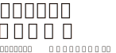

もどる
もどる
治療実績
477件
（2025.3.31現在）
重症な僧帽弁閉鎖不全症へのカテーテル治療が登場
僧帽弁閉鎖不全とは
心臓は血液を全身に送るポンプの働きをしていますが、内部は4つの部屋に分かれています｡各部屋を逆流しないよう、部屋と部屋の間には弁と呼ばれる扉がついており、心臓には4つの弁があります。 このうち、肺で酸素を渡された血液が戻ってくる左心房と、全身に血液を送るポンプの役割をしている左心室との間にある弁を僧帽弁と呼びます。 僧帽弁閉鎖不全症の多くは、僧帽弁の“膜”を左心室側から引っ張っているひも（腱索）が伸びたり切れたり、あるいは僧帽弁のわくが拡大したりすることで、うまく弁が閉じずに合わさりが悪くなることで血液が左心室から左心房に逆流するようになるのが僧帽弁閉鎖不全症です。
経皮的僧帽弁クリップ術とは
現在の僧帽弁閉鎖不全症治療の選択肢としては薬物治療と外科手術がありますが、薬物療法はあくまで対症療法であること、そして外科手術は左室機能低下、複数の併存疾患、ご高齢の患者さんにおいてはどうしても困難であると思われ、重症な僧帽弁閉鎖不全症の患者さんには有効な治療方法が他にありませんでした。 今回の治療方法が登場したことにより、外科手術を受けるにはリスクの高い患者さんに対しても治療の選択肢を増やすことができるようになりました。
経皮的僧帽弁クリップ術 実施基準
主な施設基準 手術・検査 要件
Brockenbrough 20 例以上
PCI 100 例以上
TEE 100 例以上
・術中TEE 30例以上 ・診断目的の検査 50例以上
僧帽弁外科手術25例以上
そのうち形成術10例以上
心臓血管外科手術100例以上
Off-pump CABG含む
カテ室で実施可能
ハイブリッド手術室は推奨
主な施設基準 ハートチーム要件
循環器内科専門医3名
心臓血管外科専門医2名＋心臓外科医1名
修練指導医1名以上
エコー専門医1名
JBPOT合格者、超音波専門医、SHD診療のための心ｴｺｰ図認証医の
いずれか１つ以上を満たす
症例見学2例以上
トレーニングの受講者2名以上
Abbottが提供するトレーニング
臨床工学技師2名以上
うち体外循環技師認定師1人以上
医師の紹介
循環器内科専門医
循環器内科主任部長
白井 伸一
- ・日本内科学会 指導医 専門医 認定医
- ・日本循環器学会 専門医
- ・日本心血管インターベンション治療学会 専門医 認定医 Valve委員
- ・経カテーテル大動脈弁植え込み術 認定術者および 指導医
- ・経皮的心房中隔欠損閉鎖術認定術者
- ・日本経カテーテル心臓弁治療学会 理事
- ・PCR Tokyo Valves program committee
- ・日本心血管脳卒中学会 学術評議員
心エコー専門医
循環器内科部長
磯谷 彰宏
- ・ESC, EACVI certification in Adult Transthoracic Echocardiography
（ヨーロッパ心臓病学会成人経胸壁心エコー図 専門医） - ・ESC, EACVI certification in Adult Transoesophageal Echocardiography
（ヨーロッパ心臓病学会成人経食道心エコー図 専門医） - ・ESC,HFA certification for professionals specialising in heart failure
（ヨーロッパ心不全学会 心不全専門医） - ・JB-POT（日本周術期経食道心エコー 認定医）
- ・SHD（Structural Heart Disease）心エコー図認証医
- ・日本内科学会 認定医 ・日本循環器学会 ・日本心血管インターベンション治療学会
- ・日本超音波医学会 ・日本心エコー図学会 ・日本心不全学会
経皮的僧帽弁クリップ術の適応に悩んでいらっしゃる地域の先生方へ
本人の受診がなくとも、紹介状 + 心エコー画像のみを送っていただければ、”MitraClip”の概ねの適応をお答えします。
まずは紹介状 + 心エコー画像を当院 医療連携課へご郵送ください。担当医よりご回答します。なお、お送りいただいたCD-R等は当院にて責任を持って破棄させていただきます。
地域の先生方向けのQ&A
僧帽弁逸脱による逆流は治療可能ですか？
治療可能です。A2やP2などの中央部分の逸脱がよい適応です。A1やP1といった外側、あるいはA3やP3といった内側の逸脱の場合は難易度が上がりますが、極端に偏った形態でなければ治療できる可能性は十分あります。
僧帽弁の牽引 (tethering)による二次性僧帽弁逆流症 (secondary MR, 機能性僧帽弁逆流症 = functional MR) は治療可能ですか？
可能です。世界的にみても日本の市販後調査でも、概ね 3/4 は 二次性僧帽弁逆流 が対象で、MitraClipの主なターゲットとなっています。
心房細動などが関係した弁輪拡大が逆流の主因となっているいわゆる心房性機能性僧帽弁逆流 (atrial functional MR)は治療可能ですか？
難易度がやや上がりますが、治療可能です。
MitraClipが不可能な弁の形態はどんなものですか？
石灰化が非常に強くclipにより僧帽弁狭窄を来すリスクが高い弁や、後尖が非常に短い形態の場合で、今までに治療を断念したことがあります。この他、活動性の感染性心内膜炎による逆流や、リウマチ性僧帽弁狭窄症を合併した僧帽弁逆流は適応外です。
透析症例は禁忌ですか？
透析症例でも MitraClip は施行可能です。当院でも施行実績があります。
初回の心不全入院の場合、適応になりますか?
僧帽弁逸脱症などの一次性僧帽弁逆流 (primary MR, 変性性僧帽弁逆流症 = degenerative MR) の場合は適応があると考えられます。僧帽弁の牽引 (tethering) による逆流＝secondary MR (functional MR) の場合は、まず十分な薬物療法を優先します。
入院歴はないものの労作時息切れがある場合、適応になりますか？
添付文書では “症候性” の症例が対象とされていますので、入院歴がなくとも僧帽弁逆流による自覚症状があれば適応になります。
うっ血性心不全の急性期に重症の僧帽弁逆流を呈するものの、治療後は中等度未満に逆流が軽減する症例がありますが、MitraClip の適応になりますか？
心不全入院を繰り返す場合は、MitraClipのとても良い適応です。初回の心不全の場合は、薬物療法の強化をまず優先下さい。
発作性心房細動、慢性化して数年以内の心房細動や心房頻拍などの上室性不整脈を合併した僧帽弁逆流はどのように治療しますか？
上室性不整脈と僧帽弁逆流は密接に関係しています。不整脈を合併している場合はカテーテルアブレーションの適応をまず積極的に検討します。不整脈治療が成功し、数か月後に僧帽弁逆流も大幅に改善する症例も経験しております。
ペースメーカー等のリードがあっても MitraClipは施行できますか？
可能です。新規植え込みの場合は 3か月程度あけるようにしますが、必要な場合はいつでも行いますのでご安心下さい。
両心室ペースメーカーの植え込みとMitraClipはどちらを先に行いますか？
原則として両心室ペースメーカーの植え込みをまず考慮します。但し、QRS幅が広くても心エコーで観察した同期不全がごく軽度で、一方で僧帽弁逆流が明らかに重症の場合はMitraClipを先に施行する場合もあります。同期不全・逆流の程度に応じて症例ごとに判断しております。
十分な体力のある若い方がMitraClipを希望された場合、適応になりますか？
厚生労働省が定める適応基準ではMitraClipはハイリスク症例に行うこととされています。若く体力のある方には手術をお勧めします。当院の心臓血管外科では低侵襲手術も行っているため、条件が合う方には積極的に検討致します。
非常に高齢の方で僧帽弁逆流は重症ですが無症状です。MitraClipの適応になりますか？
厚生労働省の定める適応基準では症状のある方に施行することとなっております。完全に無症状ならば、待機となります。但し、患者さんが自己調節して症状のない範囲でしか日常生活動作を行っていないこともあるため、本当に無症状なのか、慎重に詳しく問診することが大切です。
ハイリスクの方で、僧帽弁逆流に加えて冠動脈病変もあります。MitraClipは小倉記念病院でお願いしたいが、冠動脈インターベンションは自施設で施行したいと考えている。そういったことは可能ですか？
ご紹介頂くご施設様の意向を最大限尊重致します。
僧帽弁形成術後の逆流再発の症例は、MitraClipで治療が可能ですか？
高難度ですが、MitraClipで治療できる可能性はあります。実際には僧帽弁の開口面積がポイントで、開口面積が比較的大きい場合は術後の僧帽弁狭窄のリスクが低いため、治療できる可能性が高まります。ぜひ一度ご相談下さい。
経皮的心肺補助循環(PCPS)、大動脈内バルーンパンピング(IABP)やImpellaで循環サポートを行っている症例はMitraClip可能ですか？
既に補助循環を使用している患者様は除外基準に抵触しますので、適応外となります。できましたら、その前に電話等でぜひご連絡下さい。
急いで治療をする必要がある患者様です。
2019年9月よりハイブリッド手術室が増設され稼働を開始致しました。可能な限り早急に対処致します。
結局、適応がよく分からない
本人の受診がなくとも、紹介状 + 心エコー画像のみを送っていただければ、”MitraClip”の概ねの適応をお答えします。まずは紹介状 + 心エコー画像を当院 医療連携課へご郵送ください。担当医よりご回答します。なお、お送りいただいたCD-R等は当院にて責任を持って破棄させていただきます。